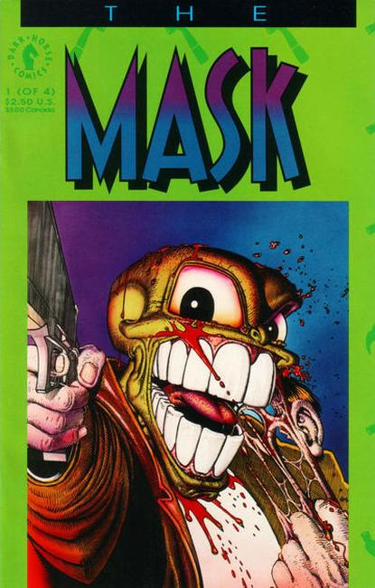
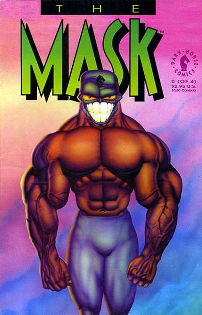

The Mask is a 1994 American fantasy superhero comedy film directed by Charles Russell, produced by Bob Engelman, and written by Mike Werb, based on the comic series of the same name published by Dark Horse Comics. The film stars Jim Carrey, Peter Greene, Amy Yasbeck, Peter Riegert, Richard Jeni, Ben Stein, Joely Fisher, and Cameron Diaz in her film debut. It revolves around Stanley Ipkiss (Carrey), an unlucky bank clerk who finds a magical mask that grants its wearer cartoon-like superpowers.
The film was released on July 29, 1994 by New Line Cinema, becoming a critical and commercial success, grossing over $351.6 million over a $23 million budget and receiving positive reviews. It cemented Carrey's reputation as a dominant actor of the 1990s, and established Diaz long-term as a leading lady. Carrey was nominated for a Golden Globe for his role, and the film was nominated for the Academy Award for Best Visual Effects but lost to Forrest Gump. A stand-alone sequel, Son of the Mask, was released in 2005.

Series: 4 issue mini-series 1991
Publisher: Dark Horse
Written by John Arcudi
Illustrations by Doug Mahnke
The city reeks of crime and corruption and Lieutenant Kellaway feels helpless to stop it...until an ancient mask is placed into his care. Suddenly, a zany masked vigilante is on a one-man rampage to eliminate crime with his own brand of lunatic justice. Add a touch of ultra-violence, great art, and a splash of sardonic humor, and you've got...The Mask.

Hot on the heels of the above successful 4-issue series, Dark Horse Comics is reprinting the first issue (calling it issue #0) for all the new readers who missed it the first time around, issue #1 sold out!
Related Dark Horse Titles:
Adventures of the Mask
Mask Returns
Mask Strikes Back
Mask: Hunt for Green Oct
Mask: Southern Discomfort
Mask: Toys in Attic
Mask: World Tour